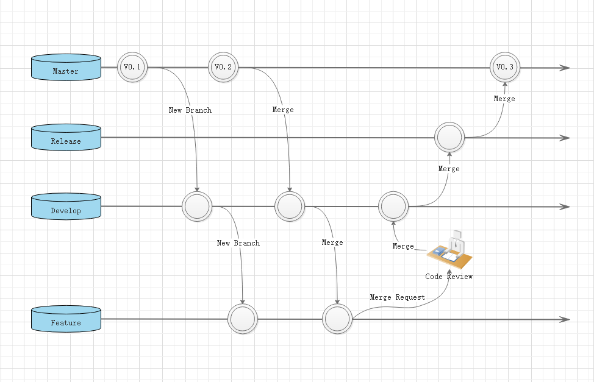
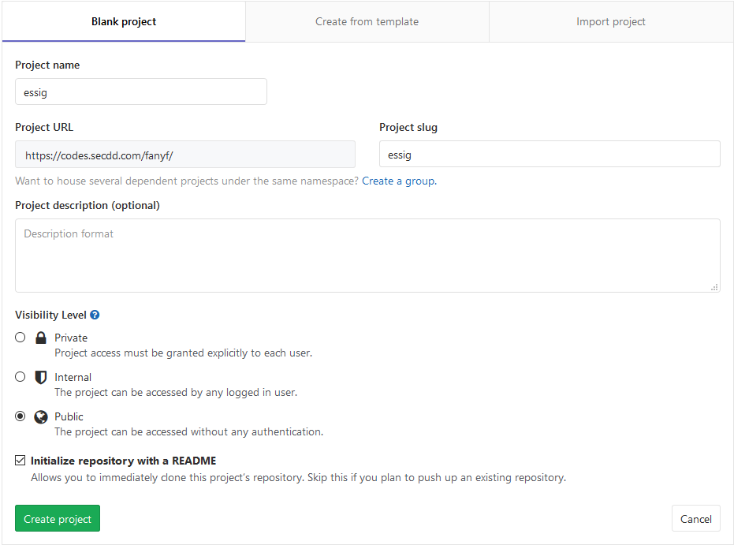
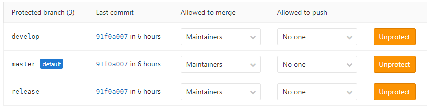
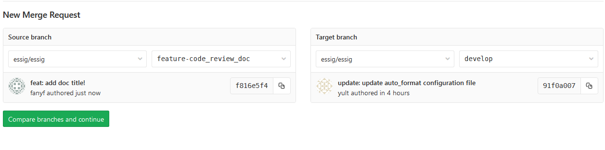
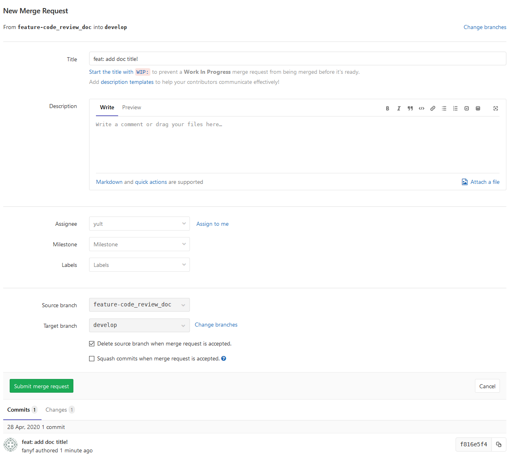

Code Review 指导手册
Table of Contents
| 缩略语 | 含义 | 说明 |
|---|---|---|
| CR | Code Review | |
| CL | Change List | |
| LGTM | Look Good To Me | 代码已经通过reviw, 可以合并 |
| SGTM | Sounds Good To Me | 同上 |
| PR | Pull Request | 你修改了他人的代码，将你的修改通知原来的作者，希望他合并你的修改 |
| WIP | Work In Progress | 如果有个很大改动的PR，可以在写了一部分的情况下先提交，但是在标题里写上 WIP，以告诉项目维护者这个功能还未完成，方便维护者提前 review 部分提交的代码。 |
| ACK | Acknowledgement | 我确认了或者我接受了， 我承认了 |
| NACK/NAK | Negative Acknowledgement | 我不同意 |
1 CodeReview 目的
- 在项目早期就能够发现代码中的BUG；
- 帮助初级开发人员学习高级开发人员的经验， 达到知识共享；
- 避免开发人员犯一些很常见很普通的错误；
- 保证项目组成员的良好沟通；
- 项目或产品的代码更容易维护；
2 CodeReview 前提
- Code Review人员是否理解了Code Review的概念和Code Review将做什么
- 如果做Code Review的人员不能理解Code Review对项目成败和代码质量的重要程度，他们的做法可能就会是应付了事。
- 代码是否已经正确的build，build的目的使得代码已经不存在基本语法错误
- 我们总不希望高级开发人员或是主管将时间浪费在检查连编译都通不过的代码上吧。
- 代码执行时功能是否正确
- Code Review人员也不负责检查代码的功能是否正确，也就是说，需要复查的代码必须由开发人员或质量人员负责该代码的功能的正确性。
- Review人员是否理解了代码
- 做复查的人员需要对该代码有一个基本的了解，其功能是什么，是拿一方面的代码，涉及到数据库或是通讯，这样才能采取针对性的检查
- 开发人员是否对代码做了单元测试
3 CodeReview 流程
下面使用GitLab作为示例描述CodeReview的大致流程
| 分支类型 | 名称格式 | 说明 |
|---|---|---|
| Master | master | 主干分支，有且只有一个 |
| Release | release-* | *可以是版本发布日期， 也可以是需求名称的缩写， 也可以只用一个release分支 |
| Develop | develop-* | *通常是版本发布日期或者需求名称缩写（也可以只用一个） |
| Feature | feature-{username}-* | username可以是开发人员姓名缩写， *可以是需求名称 |
3.1 工作流程说明
CR分支流程: 
- 需求确认后， 从master创建develop分支
- 开发人员从develop分支创建自己的feature分支进行开发
- master分支发生变更， 需要从master分支合并到develop分支、可以考虑定期合并一次（上图的V0.2Merge操作）
- feature分支在向develop分支合并之前，需要先从develop分支合并到feature
- develop分支在测试环境测试通过之后，合并到release分支并发布到预发布环境进行测试
- release分支在预发布环境验证通过后，合并到master分支并发布到生产环境进行验证
3.2 操作流程
3.2.1 创建项目以及分支
创建项目及分支: 
3.2.2 配置分支权限
我们限制分支，所有的开发人员对develop分支、release分支、以及master分支均无Push权限，只能以Merge方式合并到对应分支，而且只有Maintainers（Masters）组的用户有Merge权限，配置效果如下图。
配置分支权限: 
3.2.3 提交Merge Request
开发人员在功能开发测试完成后push到feature分支，随后可以提交merge请求，合并到develop分支
从source分支合并到target分支: 
填写CodeReview信息: 
| 操作项/填写项 | 说明 |
|---|---|
| Description | 描述，需要将变更的需求描述清楚，最好附件Code Review要点 |
| Assignee | 分配到的人，被分配到的人将会收到邮件通知，跟Merge权限没有必然关系，仍然是项目的Maintainers（Masters）角色拥有Merge权限 |
| Milestone | 里程碑，没有可不选 |
| Label | 标签，没有可不选 |
| Source Branch | 源分支 |
| Target Branch | 目标分支 |
3.2.4 CodeReview
在创建MergeRequest后，上一步中被Assignee的人员会收到邮件提醒，如果还需要另外的人员进行CodeReview， 只需要将该页面的链接发送给其他项目成员即可。
注意： 项目成员可以查看变更并且进行评论， 但是按照之前的配置，只有Maintainer（Masters）角色的成员才有Merge的权限。
CodeReview Doing:

CodeReview Finished:

在Changes选项卡中，我们可以看到所有的变更。将光标移动到行号处会出现评论按钮，我们可以点击评论按钮发起评论，这个评论是对项目成员可见的，大家可在讨论区进行讨论。最终讨论发起者有权将讨论标记为已解决resolved。
当所有的问题已解决之后（如果选择了审批人也需要审批通过），Maintainers（Masters）成员点击Merge完成合并即可。
4 审阅者CR指南
4.1 CodeReview标准
Code Review的主要目的是始终保证随着时间的推移, 项目代码会越来越健康。 前提首先得开发者应在代码中做出改进 ，如果永远都不做出改进，代码库整体质量也谈不上提升。 但是如果审查者对所有的代码改进要求的过于苛刻，开发者也会失去动力去继续改进代码质量。 通常情况可以参考一下标准：
- 只要代码对系统有明显的提升且正常工作， 即便不完美，评审者应当尽力通过这次变更。 但是如果变更里增加了评审者在系统中不想要的功能， 即便代码设计的很完美，评审者也可以拒绝掉。
- 评审者应当追求持续提高， 而不是每次都要求完美。 所以不应当要求开发者在评审通过前，对变更的每一个小块进行打磨，那些对整个系统的可维护性、可读性及可理解性的变更，不应该因为代码不够完美，而被推迟通过。
代码审查具有重要的功能，可以增加开发人员对语言、框架或通用软件设计原理的新知识。 CodeReview的评论中增加一些有利于开发人员学习的内容总是可取的。共享知识是随着时间的推移改善系统代码运行状况的一部分。请记住，如果您的评论纯粹是建议性的，请在其评论前面加上“ Nit：”（nitpick： 吹毛求疵），或者明确表明不需要在本CL中对其进行解决。
4.1.1 原则
- 技术和数据高于个人意见、偏好。
- 风格问题依据项目标准。
- 软件设计从来不是纯粹的代码风格或是个人偏好问题，它们是基于一些应当被权衡的规则而不仅仅是个人倾向。 有时会有多种设计方法，如果开发者能证明(通过数据或者原理)这些方法都同样有效，那么评审者应该接受作者的偏好，否则应该遵从软件设计标准
- 如果没有其他的规则使用，只要保证不会影响系统的健康度，评审者可以要求开发者保持和现有的代码库一致。
4.1.2 解决代码冲突
如果在Code Review中有任何的冲突， 开发人员和评审人员应当根据开发指南和评审指南， 尝试达成一致意见。 如果不能达成一致，应当进行会议讨论，加入权威人员或者管理人员进行权衡决定。
4.2 CodeReview内容
设计
Code Review中最重要的一个点就是把握住变更中的整体设计。变更中各个部分的代码交互是否正常？整个改动是否属于你负责的代码库？是否和你系统中其他部分交互正常？现在是否是添加整个功能的恰当时间？
功能性
开发者在这个变更中想做什么？开发人员打算为该代码的用户带来什么好处？（这里”用户“是指受变更影响到的实际用户，和将来会使用到这些代码的开发者）。重要的是，我们希望开发者能充分测试代码，以确保代码在Code Review期间正常运行。但无论如何，你作为审查者也要考虑一些特殊情况，像是有些并发问题。站在用户的角度，确保你正在看的代码没有bug。
你可以验证变更，尤其是在有面向用户的影响时，评审者应该仔细检查整个变更。有时候单纯看代码很难理解这个变更如何影响到用户，这种情况下如果你不方便自己在CL中打补丁并亲自尝试，你可以让开发者为你提供一个功能性的demo。
另一个在Code Review时需要特别关注的点是，CL中是否有并发编程，并发理论上可能会导致死锁或资源争抢，这种问题在代码运行时很难被检测出来，所以需要有人（开发者和评审者）仔细考虑整个逻辑，以确保不会引入线程安全的问题。（所以除了死锁和资源争抢之外，增加Code Review复杂度也可以成为拒绝使用多线程模型的一个理由）
复杂性
变更是否比预期的更复杂？检测变更的每个级别，是否个别行太复杂？功能是否太复杂？类是否太复杂？”复杂“意味着代码阅读者很难快速理解代码，也可意味着开发者尝试调用或修改此代码时可能会引入bug。
一个典型的复杂性问题就是 过度设计，当开发者让代码变得更通用，或者增加了许多当前不需要的功能时，评审者应该额外注意是否过度设计。鼓励开发者解决现在遇到的问题，而不是揣测未来可能遇到的问题。未来的问题应当在遇到时解决，到那个时候你才能看到问题本质和实际需求。
测试
开发人员应当进行单元测试、集成测试或端到端测试。一般来说，变更中应该包含测试，除非这个变更只是为了处理紧急情况。
确保变更中的测试是正确、合理和有用的。因为测试本身无法测试自己，而且我们很少会为测试编写测试，所以必须确保测试是有效的。
如果代码出了问题，测试会失败吗？如果代码发生改动，它们会误报吗？每一个测试都有断言吗？是否按照不同的测试方法对测试进行分类？
记住，不要以为测试不是二进制中的一部分就不关注其复杂度。
命名
开发人员是否使用了良好的命名方式？好的命名要能够充分表达一个项（变量、类名等）是什么或者用来做什么，但又不至于让人难以阅读。
注释
开发者有没有写出清晰易懂的注释？所有的注释都是必要的吗？通常注释应该解释清楚为什么这么做，而不是做了什么。如果代码不清晰，不能清楚地解释自己，那么代码可以写的更简单。当然也有些例外（比如正则表达式和复杂的算法，如果能够解释清楚他们在做什么，肯定会让阅读代码的人受益良多），但大多数注释应该指代码中没有包含的信息，比如代码背后的决策。
变更中附带的其他注释也很重要，比如列出一个可以移除的待办事项，或者一个不要做出代码变更的建议，等等。
注意，注释不同于类、模块或函数文档，注释是为了说明代码片段如何使用和使用时代码的行为。
风格
代码风格多种多样， 项目启动初期应当确定代码风格；审核人员应当参照约定的规范对代码风格进行审核。
开发人员不应该将风格变更与其他变更放在一起，这样很难看出变更里有哪些变化，让合并和回滚变得更加复杂，也会导致更多的其他问题。如果开发者想要重新格式化整个文件，让他们将重新格式化后的文件作为单独的变更，并将功能变更作为另一个变更。
文档
如果变更改变了用户构建、测试、交互或者发布代码相关的逻辑，检测是否也更新了相关文档，例如README。如果开发者删除或者弃用某些代码，考虑是否也应该删除相关文档。如果文档没有同步修改，则需要让开发者补充。
代码细节
查看你整个Code Review中的每一行代码，但不要只看一遍手写的类，函数或者代码块，然后假设它们都能正常运行。有些代码需要仔细检查，我们至少应该理解所有的代码都在做什么。
如果你很难看懂代码，导致Code Review的速度慢了下来，你要让开发者知道，并且在Review前澄清原因。如果你都看不懂，很可能其他人也看不懂。所以要求开发者理清代码逻辑也是在帮助未来的开发者。
如果你理解代码，但又觉得没有资格做代码评审，确保有资格的变更评审人员在代码评审时考虑到了安全性、并发性、可访问性、国际化等问题
上下文
看改动的上下文代码对Code Review很有帮助， 因为通常Code Review工具只会显示改动部分上下几行代码， 但是有些改动需要查看整个代码文件来确保这个变更可以正常运行。
Code Review时考虑到整个系统的上下文也很重要， 这次改动提升了系统健康度，或者增加了系统的复杂性，少了测试用例等等。 不可以放过任何增加系统复杂性的改动，很多系统变得复杂都是因为日积月累的小改动造成的。
亮点
如果看到变更中做的好的地方，不要吝啬你的赞美之词，尤其是开发者用某种很精巧的方式解决你评论中的问题。Code Review过多的关注于错误， 我们也应当为开发者的优秀改动点赞。在指导他人的时候， 告诉开发者正确的做法比指出他们错误的做法更有价值和说服力。
4.3 CodeReview要点
- 完整性检查（Completeness）
- 代码是否完全实现了设计文档中提出的功能需求
- 代码是否已按照设计文档进行了集成和Debug
- 代码是否已创建了需要的数据库，包括正确的初始化数据
- 代码中是否存在任何没有定义或没有引用到的变量、常数或数据类型
- 一致性检查（Consistency）
- 代码的逻辑是否符合设计文档
- 代码中使用的格式、符号、结构等风格是否保持一致
- 正确性检查（Correctness）
- 代码是否符合制定的标准
- 所有的变量都被正确定义和使用
- 所有的注释都是准确的
- 所有的程序调用都使用了正确的参数个数
- 可修改性检查（Modifiability）
- 代码涉及到的常量是否易于修改(如使用配置、定义为类常量、使用专门的常量类等)
- 代码中是否包含了交叉说明或数据字典，以描述程序是如何对变量和常量进行访问的
- 代码是否只有一个出口和一个入口（严重的异常处理除外）
- 可预测性检查（Predictability）
- 代码所用的开发语言是否具有定义良好的语法和语义
- 是否代码避免了依赖于开发语言缺省提供的功能
- 代码是否无意中陷入了死循环
- 代码是否是否避免了无穷递归
- 健壮性检查（Robustness）
- 代码是否采取措施避免运行时错误（如数组边界溢出、被零除、值越界、堆栈溢出等）
- 结构性检查（Structuredness）
- 程序的每个功能是否都作为一个可辩识的代码块存在
- 循环是否只有一个入口
- 可追溯性检查（Traceability）
- 代码是否对每个程序进行了唯一标识
- 是否有一个交叉引用的框架可以用来在代码和开发文档之间相互对应
- 代码是否包括一个修订历史记录，记录中对代码的修改和原因都有记录
- 是否所有的安全功能都有标识
- 可理解性检查（Understandability）
- 注释是否足够清晰的描述每个子程序
- 是否使用到不明确或不必要的复杂代码，它们是否被清楚的注释
- 使用一些统一的格式化技巧（如缩进、空白等）用来增强代码的清晰度
- 是否在定义命名规则时采用了便于记忆，反映类型等方法
- 每个变量都定义了合法的取值范围
- 代码中的算法是否符合开发文档中描述的数学模型
- 可验证性检查(Verifiability)
- 代码中的实现技术是否便于测试
4.4 如何浏览CL
4.4.1 概要：
- 这条改动是否生效？ 这次变更是不是描述清晰？
- 首先阅读CL中最重要的一部分， 整体上是否设计良好？
- 按照合适的顺序阅读剩下的变更。
4.4.1.1 第一步：综观这个改动
阅读CL描述并且明白CL大体内容。 这些修改是否有意义？ 首先如果这个修改不应该有，请立刻说明为什么这些修改不应该有。当因为这个原因拒绝这次改动时， 应当同时告诉开发人员如何去做。 例如：您可能会说：“看起来您为此做了一些出色的工作，谢谢！但是，我们实际上正着手删除FooWidget系统，您正在此处进行修改，因此我们不想进行任何新的修改现在。所以，您可以重构我们的新BarWidget类吗？"
请注意，审阅者不仅拒绝了当前的CL并提供了替代建议， 并且措辞也很优雅， 同时也表现出了对开发人员的尊重。
如果需要审阅的多个CL都是不需要进行的更改，您应该考虑重新设计团队的开发流程或已发布流程，以便在CL完成之前进行更多的交流。最好在做大量工作之前告诉开发人员“不必做”，因为现在要将其丢弃或彻底重写。
4.4.1.2 第二部：检查CL的主要部分
查找属于此CL的“主要”部分的文件。通常来说一个CL最重要的部分是它逻辑修改数最多的那个文件。这样有助于了解相关的CL，通常来说会加快code review。如果CL太大，无法确定哪些部分是主要部分，可以通过询问开发人员来获得建议，或要求他们将CL拆分为多个CL。
如果发现CL的这一部分存在一些主要的设计问题，则即使现在没有时间审查CL的其余部分，也应当立即写下这些评注。实际上，检查其余的CL可能会浪费时间，因为如果设计问题足够严重，那么许多代码都是没有必要审核的。
– 立即写下这些设计评注有两个主要原因：
- 开发人员通常会发送给审核者一个CL，然后在等待审核时立即基于该CL进行新工作。如果您正在审查的CL中存在重大设计问题，那么他们也将不得不重新设计其以后的CL。你能在他们做太多无用功之前制止他们。
- 重要的设计变更比小的变更需要更长的时间。开发人员几乎都有截止日期；为了在截止日期之前完成工作， 并在代码库中保留高质量的代码，开发人员需要尽快重新开始CL的工作。
4.4.1.3 第三步：依序阅读CL的其他部分
确认CL整体上没有大的设计问题后，请尝试找出逻辑顺序来浏览文件，同时还要确保不要错过对任何文件的审查。通常，在浏览了主要文件之后，可以按照代码审查工具展示的文件顺序来浏览。有时在阅读主要代码之前先阅读测试代码也是有帮助的，因为这样您就可以知道更改应该做什么。
4.5 CodeReview速度
Code Review速度慢的影响：
- 整个团队的速度会降低。 你不快速响应别人的Code Review，会导致整个团队的新功能、bug修复因为没有人做CR被延迟几天、几周甚至几个月。
- 开发者应维护Code Review的流程，如果审查者很少回复Code Review，但是每次都对CL提出大量的改动，这可能会打击到开发者。通常，开发者可能会抱怨审查者太严格。如果审查者能在开发者更新后快速响应，并提出有实质性提升的建议（能显著提升代码运行状况的CL），抱怨就会消失。Code Review中绝大多数抱怨会随着CR速度的提升而消失。
- 可能影响到代码质量。如果CR慢了，可能会使开发者感觉自己提交的代码不够好。CR慢了，也会影响到代码清理、重构、和现有CL的进一步提升。
4.5.1 何时处理CodeReview
如果正在进行类似编码之类的重要工作，尽量不要放下手头工作而去做Code Review，因为在工作中断后需要很长的时间才能重新恢复到专注状态。所以，为了不让其他开发者等而去中断自己的编码工作，明显得不偿失。所以，尽量在工作断点的时候回应Code Review，比如写完代码、午饭后、会议结束后、从茶水间回来……
4.5.2 快速响应
处理Code Review的速度，一方面是指响应时间，另一方面是指整个Review从提交到通过的时间。整个过程应该足够快，但是对于每个人来说，迅速做出反应比迅速完成整个过程更为重要。 即使有时需要很长时间才能完成整个Code Review流程，评审者在整个过程中的快速响应也可以大大缓解开发人员因为Code Review“慢”而产生的挫败感。如果你太忙不能全身心投入到Code Review中，应当让开发者知道你什么时候会去Review，或者建议其他评审者快速响应，再或者提供一些初步的建议。（注意：这不是建议你中断自己的工作，而是在工作间隙合理响应）。 评审者有必要花时间去做Code Review来保证代码符合标准，不管怎么样，每个回应应当保证足够快速。
4.5.3 LGTM和注释
为了让CR更快，有些情况下也应该让CR提前通过，即便有些评论没有被解决，比如：审查者信任开发者能适当解决所有评审者的建议；其余的改动很小，开发者不必做。除非另有明确说明，评审者应指明他们打算使用这些选项中的哪一个。
4.5.4 大的CL
如果有人给你提交了一个非常大的Code Review，你也不确定你有时间看，你最好建议开发者把CL拆分成几个小的部分，分多次Code Review，而不是一次性全部提交上来。这即便开发者多做一些额外的工作，也是可以把它拆分开的，而且拆分也有利于评审者。
如果CL不能拆分成多个小CL，你也没有时间快速完整的Review整个代码，只是对整体设计提一些建议，然后发回给开发者改进。作为评审者，你的目标之一是在不牺牲代码质量的前提下，不阻碍开发者的进程或者尽可能让他们向前推进
4.5.5 持续提升Code Review
如果你遵从这些建议并在Code Review中严格执行这些准则，你就会发现整个Code Review的流程会越来越快。开发者将了解健康代码的要求，并从一开始就交出完美的代码，然后Code Review的时间会越来越少。评审者将学会如何快速做出响应，并且不是在这个Code Review过程中增加不必要的延迟。但是，不要为了提升速度牺牲Code Review的标准和代码质量。从长远来看，这并不会提升速度。
4.5.6 紧急情况
当然也有一些紧急的CL需要快速走完这个Code Review流程，这时候在质量上的把控可以稍微放松一些。可以参考紧急事件一文来了解哪些是紧急事件哪些不是。
4.6 如何编写代码评论
概要：
- 礼貌
- 解释你的观点.
- 明确指出方向和问题，帮助开发人员去权衡作出决定.
- 鼓励开发人员通过注释和精简代码来解决你的困惑而不是通过解释
4.6.1 礼貌
通常来说当你Code Review代码时保持礼貌和尊重能使开发人员更加清晰，得到更多帮助。这样是为了保证你的代码评论仅仅针对的是code而不是针对开发人员。你不必一直这么去做，但是当你的评论会让开发人员生气或者产生争执时有必要这么去做。比如：
不好的例子: “你为什么会在这里使用线程，这样做难道会有任何好处？”
好的例子: "我并没有发现这个并发模块给程序带来了多少帮助，并且还增加了程序的复杂性，因此我认为这段代码最好是用单线程而不是多线程。
4.6.2 解释清楚原因
从上面“好”的例子当中你能发现，这样有助于开发人员理解为什么你写了这些评注。你不一定非得包含这些信息在你的评注里面，但是适当的多解释你的意图或者多给出一些提升代码质量的建议都是非常好的实践。
4.6.3 给予指导
通常来说修复CL是开发人员的职责而不是评审人员的。你不需要向开发人员提供详细的解决方案或者代码。
但是这并不意味着评审员就不应该提供帮助。你需要在指出问题和提供直接指导之间找到平衡。指出问题并且帮助开发人员决策能够帮助开发人员学习，并且使code review变得更加简单。这样更容易产生更好的方案，因为开发人员比评审者更加了解代码。
尽管这样，有时候直接给出指导，建议甚至是代码更有帮助。code review的主要目的是尽可能得到最好的CL。其次是提高开发人员的技能这样就能减少以后评审的次数。
4.6.4 接受解释
与其要求让开发人员解释一段你看不懂的代码，其实更应该做的是让他们重写代码，让代码更清晰。在代码中添加注释也是一种适当的响应，只要它不只是解释过于复杂的代码即可。
4.7 处理CodeReviw中的反对意见
有时开发者会在Code Review中反驳你，他们可能不同意你的意见，或者抱怨你太严格了。
4.7.1 谁是谁非
当开发者不同意你的建议时，首先花点思考下他们是否是对的，通常而言你比他们更熟悉代码，所以可能在某个方面理解更深， 如果确实如此， 应当对开发人员的观点给与肯定。
然而，开发者不总是对的，此时评审者应当解释自己的观点建议。好的解释不仅要体现出对开发者CL的理解， 还要说明为什么要按照评审者的观点建议来修改。
如果评审者认为他们的建议可以改善代码质量，并且他们认为带来的代码质量改进值得开发者做这些额外的工作，评审者就应该坚持自己的立场。
有时候要让开发者接受，需要花很多时间反复解释，但始终确保该有的礼貌，并让开发者知道评审者的观点。
4.7.2 惹恼Developers
有时评审者会认为坚持让开发者做出改动，可能会惹恼开发者，但这种情况通常都很短暂，而且之后他们会感激你帮助他们提高了代码质量。如果你在Code Review中很有礼貌，开发者根本不会被惹恼，这种担心是多余的。通常，令开发者恼怒的的是你写注解的方式，而不是你对代码质量的坚持。
4.7.3 稍后解决
一种常见的反驳原因是开发者希望能尽快完成任务。他们不想一轮又一轮地做Code Review，然后就会说他们会在后续CL中处理这些问题，你只需要通过就行。有些开发者做的很好，他们会立马提交后续CL处理这些问题。然而，经验告诉我们原始CL通过之后拖的时间越久，就越不可能修复。除非开发者在当前CL通过后立马修复，否则他们就不可能修复。这并不是开发者不负责任，而是因为他们有好多工作要做，而修复工作也会因为工作压力而被遗忘。所以最好坚持让开发者现在就在CL中处理掉这些问题，“留着以后清理”是一种不可取的方式。
如果CL中引入了新的复杂性，提交之前必须清理掉，除非是紧急情况。如果CL中暴露出一些目前还无法定位的问题，开发者应该记录下这些bug，并将其分配给他们自己，确保这些问题不会被遗忘。他们还可以在代码中加入 TODO 注释，指向已经记录好的 bug。
4.7.4 抱怨太严格
如果你之前Code Review很宽容，然后突然变得严格起来，可能会引起一些开发者的抱怨。不过没关系，加快Code Review的速度通常会让这些抱怨消失。
有时，这些抱怨可能需要几个月的时间才能消除，但最终开发者在看到产出的优质代码时会理解严格Code Review带来的价值。有时候，一旦发生某些事让他们真正看到严格Code Review的价值，抗议最大声的人甚至会成为你最坚定的支持者。
4.7.5 解决冲突
如果你遵循了上述方法，但仍然会在Code Review中遇到无法解决的冲突，请再次参阅Code Review标准，了解那些有助于解决冲突的指导和原则。
5 CR之开发者指南
5.1 如何编写CL
CL描述是对所做的更改以及更改原因的公开记录 。它将成为我们版本控制历史的永久组成部分，除了评审者之外，还可能有数百人会阅读它。
将来的开发人员将根据其描述搜索您的CL。如果所有重要信息都在代码中而不是描述中，那么对他们而言，找到CL会很困难。
5.1.1 首行
言简意赅、语义完整、空行隔开。
CL描述的第一行应该是对CL正在做的具体工作的简短总结，紧跟一个空行。在未来，这是大多数的代码搜索者在浏览一段代码的版本控制历史时会看到的，因此第一行应该足够有信息量，他们不必阅读你的CL或它的整个描述就可以大致了解你的CL实际做了什么。
5.1.2 正文内容丰富
其余描述应该是具有丰富的内容。它可能包括对正在解决问题的简要描述，以及问什么这么改。如果这种方法有任何缺点，应当进行说明。将相关的背景信息（例如bug数目，基准测试结果），以及设计文档的链接。即使是很小的CL也需要注意细节。请将来龙去脉放入CL中。
5.1.3 糟糕的示例
"Fix bug"是一个不充分的CL描述。是什么bug？你是怎么修复它的？
其他一些类似的不好的CL描述:
“Fix build.” “Add patch.” “Moving code from A to B.” “Phase 1.” “Add convenience functions.” “kill weird URLs.”
这里有一些是真实的CL描述。尽管简短，但它们没有提供足够的有用信息。
5.1.4 优秀的CL示例
5.1.4.1 功能变更
rpc: remove size limit on RPC server message freelist.
Servers like FizzBuzz have very large messages and would benefit from reuse.
Make the freelist larger, and add a goroutine that frees the freelist entries slowly over time, so that idle servers eventually release all freelist entries.
前几个词描述了CL描述实际做了什么。其余描述在说明解决的问题，为什么这是一个好的方案，以及具体实现的细节。
5.1.4.2 重构
Construct a Task with a TimeKeeper to use its TimeStr and Now methods.
Add a Now method to Task, so the borglet() getter method can be removed (which was only used by OOMCandidate to call borglet’s Now method). This replaces the methods on Borglet that delegate to a TimeKeeper.
Allowing Tasks to supply Now is a step toward eliminating the dependency on Borglet. Eventually, collaborators that depend on getting Now from the Task should be changed to use a TimeKeeper directly, but this has been an accommodation to refactoring in small steps.
Continuing the long-range goal of refactoring the Borglet Hierarchy.
第一行描述了CL做了什么，以及它是如何与过去发生变化的。 其余的描述将讨论具体的实现、CL的来龙去脉、解决方案的不理想以及未来可能的方向。它同样是解释为什么要进行这个修改。
5.1.4.3 需要上下文的小CL
Create a Python3 build rule for status.py.
This allows consumers who are already using this as in Python3 to depend on a rule that is next to the original status build rule instead of somewhere in their own tree. It encourages new consumers to use Python3 if they can, instead of Python2, and significantly simplifies some automated build file refactoring tools being worked on currently.
第一句描述了实际做了什么。其余的描述解释了为什么要进行更改，并给了reviewer很多背景。
5.2 编写小的CL
5.2.1 为何要写简短的CL
简短的CL有这些好处:
- Code Review更快 与比起花30分钟审查一个大型的CL相比，对审查者来说花5分钟审查一系列小的CL更加容易。
- 审查更加彻底。进行较大的更改后，审阅者和作者往往会因大量详细评论的来回移动而感到沮丧，有时这些评论会遗漏重要的观点。
- 减少出现bug的概率。由于更改较少，审阅者更容易有效地推断出CL的影响，并检查否导致bug。
- 减少不必要的工作。当你写了一个巨大的CL，然后审查者觉得你总体方向错了，这会导致你浪费大量的工作。
- 合并代码更加容易。 因为大型的CL会导致大量的冲突，因此合并大型的CL会浪费很多时间，并且这将会是你经常做的工作。
- 有助于作出更好的设计。 完善小的变更比完成大型的变更的所有细节更加容易。
- 降低审查者的难度。 提审部分改动，不会影响你继续编码。
- 回滚更容易。 大型CL很有可能会在初始CL提交和回滚CL之间更新修改文件，从而使回滚变得复杂（中型CL也可能也需要回滚可能也会这样）。
注意！审查者可以因为你的改动过于巨大直接拒绝掉你通常，他们会感谢您的贡献，但要求您以某种方式使它成为一系列较小的更改。不管是你把这些改动拆分成小的改动，还是和审查者争论让他接受都会耗费你大量的时间。但是编写小型改动就不会有这样的问题。
5.2.2 怎样才算简短
通常，CL的正确大小是一个独立的更改。这意味着：
- CL所做的最小更改仅解决了一件事情。通常，这只是功能的一部分，而不是一次完整的功能。通常，宁可编写过小的CL也不要写太大的CL。你可以和你的审查者商量找到合适的尺度。
- 审阅者需要了解的有关CL的所有内容（将来的开发除外）都在CL中，CL的描述，现有代码库或他们已经查看过的CL中。
- 检入CL后，系统将继续对其用户和开发人员正常运行。
- CL不够小的话会导致其难以理解。如果你新增加了api，那么在同一个CL应该包括这个api用到的方法，以便审查者更好的理解。也能防止检入没有用的api。
多大算大，没有一个明确的要求。对于CL而言，100行通常是一个合理的大小，而1000行通常太大，但这取决于您的审阅者的判断。更改分布的文件数量也会影响其“大小”。可以在一个文件中进行200行的更改，但是将其分布在50个文件中通常会太大。
审阅者通常不太了解变更的前因后果。对开发者来说，看起来像可接受大小的CL可能会让您的审阅者不知所措。毫无疑问，尽可能把CL些小是正确的。审查者很少抱怨CL太小。
5.2.3 何时编写大型的CL
在某些情况下，较大的更改没有那么糟糕:
- 通常，可以将整个文件的删除视为更改的一行，这不会花费审阅者太长的时间。
- 有时，您完全信任的自动重构工具已经生成了一个较大的CL，而审阅者的工作只是检查健全性，然后指出他们认为需要修改的地方。这些CL可能更大，尽管会有一些风险（例如合并和测试）仍然适用。
5.2.4 按文件分类
拆分CL的另一种方法是通过将文件分类，如果这些文件是独立的更改，可以分配各不同的审阅者。
比如: 你提交一个修改的CL，创建一个修改的缓冲区，另一个CL的代码修改也可以提交到这里面。你必须按照顺序提交CL，但是审阅者可以同时进行审阅. 如果这么做，你需要尽可能告诉所有审阅者另一个CL的信息，以便他们能得到上下文信息。
另一个示例：您发送一个CL进行代码更改，而另一个CL则发送使用该代码的配置或实验；如果需要，这也更容易回滚，因为有时将配置/实验文件推送到生产环境中比更改代码更快。
5.2.5 把代码重构分离出来
尽量不要把代码重构和功能修改或者修复BUG放在一个CL中。正确的做法是分开提CL。这样对于审阅者来说，理解每个CL单独引入的更改要容易得多。
不过一些小的代码清理工作比如变量重命名可以包含在功能修改或者修复BUG的CL中。这取决于开发者和审阅者的判断，当然如果巨大的重构包含在同一个CL中会大大增加审阅的难度。
5.2.6 将相关的测试代码保存在同一CL中
避免将测试代码拆分为单独的CL。 但是根据重构准则，独立的测试修改可以单独写入CL。比如：
- 使用新测试验证先前存在的提交代码。
- 重构测试代码（例如，引入辅助函数）。
- 引入更大的测试框架代码（例如集成测试）。
5.2.7 不要破坏结构
如果您有多个相互依赖的CL，则需要找到一种方法来确保在提交每个CL之后整个系统都能正常工作。否则，可能破坏代码结构导致后面的开发者浪费大量的时间等你的提交（如果这些CL提交出了问题，则更长的时间）。
5.2.8 小到不能再小
有时候，CL确实很大，无法避免，但通常这种情况比较少见。我们应当尽力找到一种将功能分解为一系列小的更改的方法。
在写大型CL之前，思考下是不是能够将重构分离出来，这是一个更加清晰的思路。多和你的队友交流学习下他们对缩小CL的实践和方法。
如果所有这些选项都失败了（这种情况很少见），可以跟审阅者协商同步，告诉他们一个巨大的CL将要来临。在这种情况下，审查过程会耗费极其长的实践，同时必须花费精力编写更多的测试代码，避免引入bug。
5.3 如何处理评论
当你提交了一个变更做Code Review时，很可能你都会收到评审者在变更中的评论。下面是一些处理评论的建议。
不要掺杂个人情感
Code Review的目标是维护代码库和产品的质量。如果评审者批评了你的代码，可以理解为他们在帮你、帮整个代码库、甚至是帮整个公司，而不是攻击你或者是质疑你的能力。
有时候评审者会情绪低落，然后在评论中说出一些令人沮丧的话，虽然评审者这样做不对，但作为开发者你应当有心理准备。问问你自己，“评审者试图与我交流的建设性意见是什么？” 然后照他们说的那些去做。
永远不要回应充满怒气的评论，Code Review工具中违反职业礼仪的情况永远存在。如果你真的忍无可忍，建议先离开电脑也会儿，或者干一些其他的事，等心情平复下来再回复。
通常，如果评审者没有以礼貌的方式提供反馈，可以亲自询问他们，或者通过邮件的方式，友好地告诉他们你不喜欢的事情以及你希望他们做些什么。如果他们也以非建设性的方式对此私密讨论做出回应，或者没有起到预期的作用，请酌情上报给您的经理。如果他们已经以不礼貌的方式回应，或者没有取得预期的效果，视情况汇报给你的经理。
优化代码
如果评审者说他们理解不了你代码中的某些内容，可以把代码写的更清晰，或者添加注释来解释清楚代码的逻辑。如果评论似乎毫无意义，那么您的答复应该只是代码查看工具中的解释。
如果评审者无法理解你的某部分代码，那边可能未来的阅读者也可能理解不了。在Code Review工具中回应可能会使评审者理解，但是对以后的读者或者维护者来说是不友好的，此时通常应当在代码中添加注释来加以解释。
自我反思
写一个变更会花费你很大的精力，提价Code Review时会感觉如释负重，而且自己也相当确定所有工作已经做完了。所以当评审者提出改进建议时，你很容易认为那些都是错的，或者认为是评审者给你不必要的阻挠，再或者觉得评审者应该让你提交变更。无论如何，不管你怎么想，花点时间回想下评审者给你的反馈有助于提升公司的代码质量。你始终问下自己“如果评审者是对的呢？”
如果你回答不了评审者的问题，那可能说明评审者的评论不够清楚。
如果你认真考虑过后依旧认为你是对的，放心大胆地解释清楚为什么你的方法对公司更有利。通常，评审者只是提供建议，并且希望你能思考出更好的方法。也许你已经知道一些评审者不知道的关于用户、代码库、或者变更，把这些都写下来，给评审者更多的上下文信息，通常你都可以根据某些事实和评审者达成某些共识。
解决冲突
解决冲突的第一步，和你的评审者达成共识，如果无法达成共识，参阅Code Review的标准获取更多内容。
6 工具推荐
- Crucible：Atlassian 内部代码审查工具；
- Gerrit：Google 开源的 git 代码审查工具；
- GitHub：程序员应该很熟悉了，上面的 "Pull Request" 在代码审查这里很好用；
- LGTM：可用于 GitHub 和 Bitbucket 的 PR 代码安全漏洞和代码质量审查辅助工具；
- Phabricator：Facebook 开源的 git/mercurial/svn 代码审查工具；
- PullRequest：GitHub pull requests 代码审查辅助工具；
- Pull Reminders：GitHub 上有 PR 需要你审核，该插件自动通过 Slack 提醒你；
- Reviewable：基于 GitHub pull requests 的代码审查辅助工具；
- Sider：GitHub 自动代码审查辅助工具；
- Upsource：JetBrain 内部部署的 git/mercurial/perforce/svn 代码审查工具。